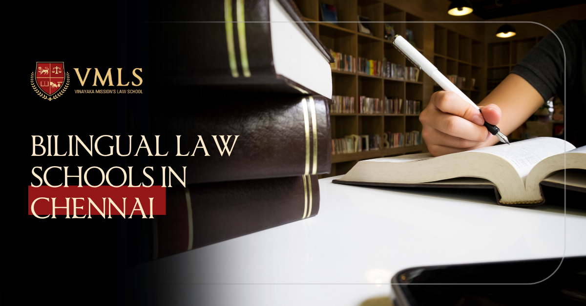

May 27, 2025
0 Views

Chennai, the cultural capital of Tamil Nadu, is known for its educational prowess, and when it comes to legal education, Vinayaka Mission's Law School (VMLS) stands out. As the legal profession evolves, the demand for bilingual lawyers who can navigate complex legal systems in multiple languages has never been higher. VMLS offers a unique bilingual legal education that equips students with the necessary tools to excel in both English and Tamil. If you're looking for a law school in Chennai that offers a bilingual curriculum, here's everything you need to know about Vinayaka Mission's Law School.
India is a country of linguistic diversity, and the legal profession is no exception. Legal professionals who are fluent in both regional languages and English can reach a wider audience, communicate more effectively, and understand local legal nuances better. Vinayaka Mission's Law School is among the best bilingual law schools in Chennai, offering courses that bridge the gap between local languages and international legal practices. This bilingual approach provides law students with the competitive edge they need in today's globalized world.
Vinayaka Mission's Law School offers a range of undergraduate and postgraduate programs designed to cater to students with various academic backgrounds. Their bilingual curriculum is available in both English and Tamil, allowing students to grasp the complexities of law while staying connected to their cultural roots. Below are the key programs offered:
This integrated law programme is designed for students who wish to pursue a career in law immediately after completing their 10+2 education. The following bilingual law courses are available under this integrated program:
The Three-Year LL.B. Programme (Hons.) is ideal for students who already hold a bachelor's degree and wish to pursue a legal career. The programme is designed to provide an in-depth understanding of law in a short span.
For law graduates seeking further specialization, Vinayaka Mission's Law School also offers LL.M. (Master of Laws) programmes. These programs are designed to provide advanced knowledge in specialized areas of law, such as corporate law, financial law, and dispute resolution.
Vinayaka Mission's Law School is not only one of the top bilingual law schools in India, but it also provides students with a chance to receive high-quality legal education while staying connected to their roots. The unique bilingual education model ensures that students are equipped with both local and global legal knowledge, enhancing their prospects in the ever-evolving legal industry.
A bilingual law school offers legal education in two languages, typically English and a regional language. In India, this could mean offering courses in both English and Tamil, helping students from different linguistic backgrounds understand legal concepts in their preferred language.
Choosing a bilingual law school in Chennai like Vinayaka Mission's Law School gives you the advantage of studying law in both English and Tamil. This helps you better understand legal principles while also making you proficient in the legal language of your region, which is crucial for working with local clients and in regional legal systems.
Bilingual legal education helps students bridge the gap between local and global legal practices. It also improves communication skills in multiple languages, making graduates more versatile in the workplace. Being fluent in both English and regional languages makes students more marketable, especially in diverse legal settings where multilingual skills are an asset.
Most bilingual law schools in Chennai, like Vinayaka Mission's Law School, offer five-year integrated law programs (such as B.A. LL.B., B.B.A. LL.B., and B.Com. LL.B.) and three-year LL.B. programs for graduates. They also offer specialized LL.M. programs in fields like Corporate and Financial Laws and Commercial Dispute Resolution.
The admission process for bilingual law schools typically involves an entrance exam, such as the VMRF Law Admission Test (VLAT) at Vinayaka Mission's Law School. This exam is conducted bilingually in English and Tamil, and students must meet certain eligibility criteria based on their academic qualifications.
Yes, many bilingual law schools, including Vinayaka Mission's Law School, offer scholarships to deserving students. For example, they offer 100% scholarships for the top 100 CLAT scorers, as well as other financial assistance programs following UGC guidelines.
Absolutely! A bilingual law degree opens doors to a variety of international career opportunities. With proficiency in English and regional languages, graduates are well-equipped to work in global law firms, multinational corporations, and international organizations that require multilingual professionals for cross-border legal work.
Studying law in both Tamil and English helps students in Tamil Nadu understand legal concepts in their native language while also preparing them for the global legal environment. It enables students to better serve local clients and communities while being well-prepared to work in international law firms or with foreign clients.
While attending a bilingual law school can offer significant advantages, it can also present challenges like mastering legal terminology in both languages. However, the bilingual curriculum at institutions like Vinayaka Mission's Law School is structured to help students overcome these challenges by providing support in both languages throughout their academic journey.
Yes, bilingual law students have a significant edge in the legal field. Being fluent in English and regional languages makes them highly sought after by law firms, courts, multinational companies, and government agencies that require legal professionals with strong communication skills in both languages.
Choosing the right law school is a critical step in shaping your career. Vinayaka Mission's Law School is one of the top bilingual law schools in Chennai that offers a unique opportunity to pursue legal education in both English and Tamil. Whether you're interested in an undergraduate LL.B. programme or a specialized LL.M. course, VMLS provides a robust platform for your future success in the legal profession.
By choosing a bilingual law school like Vinayaka Mission's Law School, you gain access to a multilingual legal education, which will prepare you to meet the demands of both local and global legal landscapes. With VMRF Law Admission Test (VLAT) conducted in both English and Tamil, the school ensures a seamless transition for students from different linguistic backgrounds.
If you're ready to take the next step in your legal education, consider Vinayaka Mission's Law School—where tradition meets innovation in legal studies at one of the top bilingual law schools in India.

5-Year Law Programme at VMLS
Jan 08, 2025Several students across India are choosing law as a career due to the various benefits it offers.

3-Year LLB Programme at VMLS
Jan 07, 2025The 3-year LLB (Bachelor of Legislative Law) programme is an undergraduate programme designed to cater...

VMRF Law Aptitude Test (VLAT): A Complete Guide
Dec 30, 2024Vinayak Mission's Law School (VMLS) is one of the best law schools in India and is being mentored by O. P. Jindal Global...

Top Law Colleges in India
Dec 23, 2024In India, law is seen as a noble career option, and the number of students interested in pursuing law is increasing.

Subjects in Law Courses
Dec 18, 2024If you are willing to work in a legal advisory firm, judiciary, or as a lawyer, then pursuing a law degree plays...

CLAT Exam Importance, Eligibility, Criteria and Syllabus
Dec 17, 2024CLAT is a national-level entrance exam, and it stands for Common Law Entrance Test. Many top law universities in India.

Best Law Courses after 12th
Dec 16, 2024Many students are developing their interest in law and several fields related to legal studies. After the 12th exam...

Types of Law Courses in India
Dec 15, 2024Many students in India choose law as a career due to the various benefits this field offers. Although there are several..

What is the LLB Degree ?
Dec 15, 2024LLB stands for Bachelor of Legislative Law, which includes understanding several legal aspects.

Explore the Diverse Career Opportunities in Law in India: Roles, Necessary Skills, and Top Employers
2024Law is one of the most sought-after careers in India. So, having an LLB degree from a good law college helps students...